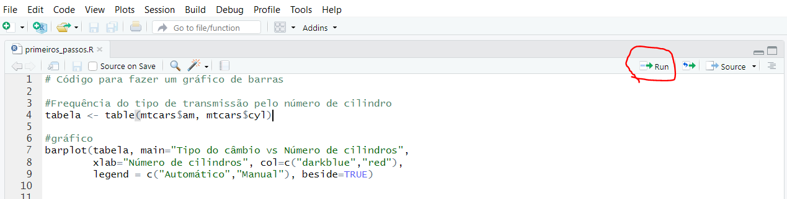

Iniciando com o R
Instalação
Todos os passos que sugiro nesse e-book são 100% gratuitos.
Você irá instalar o R, o RStudio e várias bibliotecas que vão facilitar a nossa vida, porém não há nenhum custo financeiro nisso!
Então, primeiramente, você precisa ter o software R instalado no seu computador.
E, logo depois, instalar o RStudio. O RStudio é uma interface para facilitar a sua vida.
Ele irá deixar a sua tela de programação muito mais amigável, organizada e você terá várias funções que irão facilitar o desenvolvimento do seu projeto.
Usar o R sem o RStudio é inimaginável hoje em dia. Não tem nenhum motivo para você fazer isso, então instale também o RStudio.
Caso você precise de ajuda para instalar o R e o RStudio, veja o passo a passo:
Clique aqui para ver o passo a passo de instalação do R e do RStudio.
Executar (ou rodar) o código no R
Quando colocamos a nossa linha de código ou até mesmo todo o nosso script no editor de texto do R, ele não irá fazer NADA.
A menos que você dê uma ordem para o R executar (rodar) o seu código.
Para executar o seu código, existem duas formas!
Usando o teclado: ctrl + Enter
Usando o mouse: clique no botão Run

Essa ordem pode ser para executar apenas uma linha de código, um conjunto de linhas ou até mesmo todo o seu script.
Você escolhe!
O que vai definir a parte do código que será executada?
- Depende do que está selecionado pelo seu mouse!
Por exemplo, se você selecionar todas as linhas do script e pedir para executar, todo o script será executado.
Se você selecionar só uma parte, só essa parte irá rodar.
E se você não selecionar nada?
Aí o R irá executar apenas a linha onde está o cursor do mouse (como na imagem acima).
Lógica de programação no R
A linguagem R é orientada a objetos e, na prática, isso significa que tudo no R será um objeto.
Imagine que esse “objeto” é uma variável capaz de armazenar um valor ou uma estrutura de dados. Por exemplo:
variavel1<- 5
dataset1 <- carsNa primeira linha do código eu estou atribuindo o valor 5 para o objeto “variavel1”, criado por mim.
O operador de atribuição é representado pelo <-.
Você vai escolher o nome que mais fizer mais sentido para o seu objeto, de forma que fique fácil de saber do que se trata.
Seguindo o mesmo raciocínio, eu paguei um conjunto de dados do R, que se chama cars e atribui esse conjunto para o objeto dataset1.
Então, agora o dataset1 recebeu a estrutura de dados que estava no dataset cars e os dois objetos terão o mesmo valor.
As funções no R
No R existem várias funções já pré-definidas. Elas servem para facilitar trabalhos que são feitos repetidamente por muitas pessoas.
Imagine que existe um trabalho repetitivo que várias pessoas precisem fazer.
Agora imagine que alguém já escreveu todo o passo a passo desse trabalho repetitivo e você só precisará usar a função que essa pessoa escreveu.
Por exemplo, calcular a média aritmética é um trabalho que muitos usuários do R vão usar, então já existe uma função para isso.
Essa função é a mean().
Para usar uma função, você vai inserir dentro da função os argumentos necessários.
Para calcular a média, o único argumento necessário são os números dos quais você quer saber a média.
numeros <- 10:15 # estou atribuindo os números 10, 11, 12, 13, 14 e 15 para o objeto "numeros"
numeros # pedi para o R imprimir no Console o objeto "numeros" ## [1] 10 11 12 13 14 15mean(numeros) # pedi para o R imprimir a média do objeto "numeros"## [1] 12.5obs.: Sempre que você usar uma # (hashtag) em seu código, o R irá ignorar o que está à direita da Hashtag. Isso é muito útil para que você faça comentários no seu código. Isso vai facilitar muito quando você for ler o código depois de alguns dias que escreveu. E também será extremamente útil se outra pessoa precisar ler o seu código.
O R possui milhares e milhares de funções já prontas que irão nos ajudar muito no desenvolvimento de nossos projetos.
Para você saber qual a função que irá fazer o que você está precisando, sugiro que procure no Google. Por exemplo:
Caso você queira calcular a mediana dos seus dados, coloque no Google: R como calcular a mediana.
E com dois cliques você irá descobrir que deve usar a função median()
Objetos
Cada objeto irá ter uma Classe. Ela é definida pela forma do objeto e será muito importante na maneira que o objeto será manipulado pelas funções.
Existem 5 classes básicas (atômicas) para um objeto no R:
- Caractere (character)
- Números reais (numeric)
- Inteiros (integer)
- Números complexos (complex)
- Verdadeiro/Falso (logical)
Para descobrir qual é a Classe do objeto, podemos usar a função class().
class("Essa é uma frase.")## [1] "character"class(5.6761)## [1] "numeric"class(TRUE)## [1] "logical"O texto deve sempre estar entre aspas. Assim o R irá entender que é um texto e não um objeto.
Por exemplo:
texto <- "palavra" #aqui estou atribuindo "palavra" para o objeto texto.
#Como eu coloquei o texto entre aspas, o R saberá que é um texto e não um objeto
texto## [1] "palavra"Porém, quando escrevo palavra sem as aspas, o R entenderá que eu estou me referindo ao objeto palavra, porém ele não foi criado e não existe.
palavra # o R irá acusar erro, porque não existe um objeto chamado palavra.## Error in eval(expr, envir, enclos): objeto 'palavra' não encontradoVetores
Vetor é um conjunto de valores da mesma classe. Por exemplo:
inteiros <- c(1,3,5,6) #A função "c" irá organizar os valores em vetor.
# Os elementos do vetor são separados por vírgula.
# veja que todos os valores tem a mesma classe - a classe
# de números inteiros.
logicos <- c(TRUE,FALSE,TRUE) #Vetor com valores lógicos verdadeiro/falso
logicos <- c(T,F,T) #Você pode escrever TRUE ou somente T,
# FALSE ou somente F e o R irá entender
# que se trata de valores lógicosQuando escrevemos os valores lógicos TRUE ou T e FALSE ou F, o R já sabe que são valores lógicos. Portanto, não precisamos colocá-los entre aspas.
Matrizes
Imagine alguns vetores do mesmo tamanho:
vetor1 <- c(0,1,2,3)
vetor2 <- c(3,2,1,0)
vetor3 <- c(1,1,1,1)Uma matriz é um conjunto de vetores do mesmo tamanho. Ou uma tabela com linhas e colunas. Como você preferir!
#a função matrix é usada para criar uma matriz
#o primeiro argumento da função matrix são os dados da matriz
#além disso o argumento "ncol" irá informar que desejamos formar 3 colunas.
#Assim, cada vetor definido anteriormente será uma coluna da matriz
matrix(cbind(vetor1,vetor2,vetor3),ncol=3)## [,1] [,2] [,3]
## [1,] 0 3 1
## [2,] 1 2 1
## [3,] 2 1 1
## [4,] 3 0 1Outro exemplo:
#Foram definidos os valores de 1 a 6 no argumento de dados da função.
#e também foi definido que número de linhas (nrow) igual a 2
#e o número de colunas igual a 3.
matrix(1:6, nrow = 2, ncol = 3)## [,1] [,2] [,3]
## [1,] 1 3 5
## [2,] 2 4 6Importante: todas as colunas de uma matriz possuem a mesma classe. Ou seja, são todas numéricas ou são todas lógicas ou são todas caracteres, etc.
Listas
Você vai usar bastante as listas em seus trabalhos. A principal característica delas é aceitar elementos de diferentes classes. Além disso, podem armazenar vetores e matrizes em um único objeto.
Exemplo:
vetor1 <- c(TRUE,FALSE,TRUE) #Vetor com valores lógicos
vetor2 <- c(2,3,4,5,6,7,8,9) #Vetor com valores inteiros
valor_texto <- "Esse é um texto." #Elemento da classe character
lista <- list(vetor1,vetor2,valor_texto)
lista## [[1]]
## [1] TRUE FALSE TRUE
##
## [[2]]
## [1] 2 3 4 5 6 7 8 9
##
## [[3]]
## [1] "Esse é um texto."Fatores
Até agora usamos em nossos exemplos valores lógicos (TRUE/FALSE), valores numéricos ou de texto (character). Porém, é essencial conhecer outra classe de valores: os fatores.
Fator é a classe das variáveis categóricas.
Uma variável categórica pode ser ordenada, como a renda: salários até R$ 5.000, entre R$ 5.001 e 10.000 e acima de R$ 10.000.
Ou podemos ter categorias que não possuem nenhuma ordem, como cursos: Administração, Economia, Ciência Contábeis.
Nos dois exemplos, as variáveis renda e cursos poderiam assumir a classe “factor” em nossas análises.
Também seria possível classificar renda e cursos (ou qualquer variável categórica) como uma variável de texto (character).
Então para o que serve a classe dos fatores?
Sempre que você tiver poucos valores únicos para uma variável, prefira a classificação de fator à character. Essa opção irá otimizar o armazenamento dos dados e também será necessária para utilizar algumas funções do R com seus dados.
Exemplo:
Uma pergunta aberta em um questionário irá gerar várias respostas diferentes, então não há sentido nenhum em classificar as respostas em categorias. Portanto, a classificação adequada é character.
Porém, caso o respondente tenha que escolher uma resposta entre algumas opções disponíveis para esse questionário, a melhor classificação da variável seria como fator.
O R sempre irá assumir uma classificação para a sua variável e, a priori, você não precisará fazer essa classificação. Ela só é necessária quando a classificação automática feita pelo R for indevida para o seu caso.
Coerção de classes
Em alguns casos, você pode precisar alterar a classe de objetos.
Suponha, por exemplo, que você criou o seguinte vetor x.
x<-c(0,1,0,1,1)O R irá automaticamente entender que o vetor x é numeric
class(x)## [1] "numeric"Porém, pode ser que você precise desse vetor como integer (números inteiros) ou logical (verdadeiro/falso). Por definição 0 seria FALSO e 1 seria VERDADEIRO.
Para alterar a classe de um objeto por coerção, basta você usar uma função de coerção. As função são definidas por as. + classe que o objeto vai assumir.
Ou seja: as.integer, as.logical, as.numeric, as.factor as.complex ou as.character.
Para o exemplo acima, teríamos:
as.integer(x)## [1] 0 1 0 1 1as.logical(x)## [1] FALSE TRUE FALSE TRUE TRUEDica importante: Muito cuidado ao converter objetos classificados como FATORES para NUMÉRICOS. Para fazer isso sem perder informação, você precisa converter primeiramente para character e, posteriormente, para numeric.
Valores faltantes
Os valores faltantes, também chamados de missing values são representados por NA ou NaN.
Eles não irão influenciar a classe de um objeto, por exemplo:
x<-c(1,2,NA,1,0) #apesar de ser representado por duas letras, pelo padrão do R, ele saberá que não se trata de um texto e sim de valores faltantes.
class(x)## [1] "numeric"Data Frames
Provavelmente esse é o objeto mais usado no R. É similar a uma matriz, porém com mais possibilidades.
Os Data Frames são tabelas que aceitam colunas de todas as classes. Por exemplo, podemos ter uma coluna com classe numeric, outra logical e outra character. Isso não é possível em uma matriz, onde todas as colunas devem ter a mesma classe.
Cada coluna em um Data Frame terá um nome. É altamente recomendável que você atribua nomes que realmente representem a variável ali contida. Ou seja, evite nomes como X1, X2, X3, etc.
Também é possível atribuir nomes para as linhas de seu data frame.
É muito comum que você importe seus dados/tabela para o R, porém veja como você pode criar um data frame de forma bem simples:
meus_dados <- data.frame(produto=c("roda","pneu","suspensão"), preco = c(30,20,15), esta_disponivel = c(T, T, F))
meus_dados## produto preco esta_disponivel
## 1 roda 30 TRUE
## 2 pneu 20 TRUE
## 3 suspensão 15 FALSEO data frame criado acima possui variáveis de texto, numérica e lógica.
Names
Os names são muito úteis na manipulação dos dados contidos nas matrizes, listas ou data frames.
Por exemplo, no data frame meus_dados criado no item anterior, foi definido que o nome das variáveis são: produto, preco e esta_disponivel.
Isso pode ser identificado pela função names()
names(meus_dados)## [1] "produto" "preco" "esta_disponivel"Veremos como podemos usar os nomes das colunas no capítulo de manipulação de dados.
Para alterar os nomes das colunas ou linhas de um data frame, usa-se as funções names() e row.names().
names(meus_dados)<-c("novo_nome","preco","esta_disponivel") #alterando o nome da 1a coluna
meus_dados## novo_nome preco esta_disponivel
## 1 roda 30 TRUE
## 2 pneu 20 TRUE
## 3 suspensão 15 FALSE